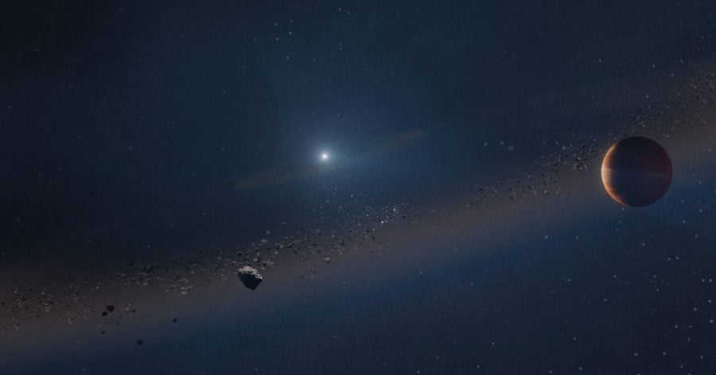

နက္ခတ် ပညာရှင် တွေဟာ ကြယ်သေ တစ်စင်းကို ပတ်နေတဲ့ ဂြိုဟ်ပျက်ကြီး တစ်လုံးကို ရှာဖွေ တွေ့ရှိ ခဲ့ကြပါတယ်။
ဒီ ကြယ်သေဟာ ကြယ်တစ်စင်း သေဆုံးသွားပြီးနောက် ကြွင်းကျန်ရစ် ခဲ့တဲ့ ကြယ်ဖြူပု (white dwarf) တစ်စင်း ဖြစ်ပါတယ်။ ဒီ ကြယ်ဖြူပု ကို ပတ်နေတဲ့ ဂြိုဟ်ပျက်ကြီးဟာ ကျွန်တော်တို့ နေအဖွဲ့အစည်း ထဲက ဂျူပီတာ ခေါ် ကြာသပတေး ဂြိုဟ် နဲ့ အတော်လေး တူတာကိုလဲ ပညာရှင်တွေ တွေ့ရှိ ခဲ့ရပါတယ်။
ဒီ ဂြိုဟ်ကို ရှာတွေ့ဖို့ ပညာရှင် တွေဟာ microlensing လို့ ခေါ်တဲ့ နည်းပညာကို အသုံးပြု ခဲ့ကြတာ ဖြစ်ပါတယ်။ ဒီနည်းက ကြယ်နှစ်စင်း တန်းသွားတဲ့ အချိန်မှာ အဝေးက ကြယ်က လာတဲ့ အလင်းတန်း တွေဟာ အနီးက ကြယ်နားက ဖြတ်တဲ့ အချိန်မှာ ဒီ ကြယ်ရဲ့ ဆွဲငင်အား ကြောင့် အလင်းတန်းတွေ ကွေးသွားတဲ့ သဘာဝကို အသုံးပြုပြီး ရှာဖွေတာ ဖြစ်ပါတယ်။
ဒီလို ကွေးသွားတာက ဘာနဲ့ တူလဲ ဆိုတော့ မှန်ဘီလူးကို အလင်းတန်းတွေ ဖြတ်တဲ့ အခါ ကွေးသွားတာနဲ့ အလား တူပါတယ်။ တနည်းအားဖြင့် အနီးက ကြယ်က အဝေးက ကြယ်ကလာတဲ့ အလင်းတန်း တွေကို ဆွဲငင်အား ကို အသုံးပြုပြီး မှန်ဘီလူး တစ်ခုလို ချဲ့ပေး လိုက်တာပဲ ဖြစ်ပါတယ်။ ဒီနည်းနဲ့ အဝေးက ကြယ်ကို ပိုပြီး ထင်ထင်ရှားရှား တွေ့မြင် နိုင်ကြပါတယ်။
ကြယ်ဖြူပုတေ ဆိုတာက အရွယ် အလတ်စား ကြယ်တွေ သေသွားပြီး ကြွင်းကျန် ရစ်ခဲ့တဲ့ ကြယ်သေ ရုပ်ကြွင်း တစ်ခု ဖြစ်ပါတယ်။ ဒီ ကြယ်ဖြူပု အတွင်းက ဗဟို အူတိုင်မှာ အဏုမြူ ဓါတ်ပြုမှု မဖြစ်တော့ပဲ ရပ်ဆိုင်း သွားပြီမို့ ဒီ ကြယ်ဖြူပု တွေဟာ ကိုယ်ပိုင် အပူချိန် ထပ်မံ ထုတ်ပေးနိုင်စွမ်း မရှိတော့ ပါဘူး။
သူတို့ ကြယ်ဖြစ်ခဲ့ စဉ်က ကြွင်းကျန်ရစ်တဲ့ အပူတွေ ကြယ်သေအတွင်းမှာ ပိတ်မိ နေတာမို့ အပူချိန် ကတော့ ဆက်လက် မြင့်မား နေဆဲ ဖြစ်ပါတယ်။ ဒါပေမယ့် နောက်ထပ် အပူ ထပ်မထုတ် တော့တာမို့ ဒီ ကြယ်ဖြူပု တွေဟာ တဖြည်းဖြည်း အပူချိန် ကျဆင်းသွားကြမှာ ဖြစ်ပါတယ်။
ကျွန်တော်တို့ နေနဲ့ အရွယ် သိပ်မကွာတဲ့ ကြယ်တွေဟာ အူတိုင်က လောင်ဆာ ခမ်းခြောက်သွားပြီး ဘဝ နေဝင်ချိန် နီးလာတဲ့ အချိန်မှာ တဖြည်းဖြည်း ကြယ်နီဘီလူးကြီး (Red giant) အဖြစ် အသွင်ပြောင်းပြီး ဖေါင်းကား လာပါတယ်။ မသေခင် ဖေါလာ သလိုပေါ့ဗျာ။ ဒီ့နောက်မှာတော့ အပြင် အကာဟာ အာကာသ ထဲကို လွင့်စဉ် ပေါက်ကွဲ ထွက်သွားပါတယ်။ အတွင်း အူတိုင်ကတော့ ကြုံ့ဝင်သွားပြီး ကြယ်ဖြူပု တစ်စင်းအဖြစ် အဆုံးသတ် သွားမှာ ဖြစ်ပါတယ်။
ဒါဟာ ကျွန်တော်တို့ နေ နောက်ထပ် နှစ်သန်း ရှစ်ထောင်လောက် ရောက်တဲ့ အချိန်မှာ ကြုံတွေ့ရမယ့် နိဂုံးပဲ ဖြစ်ပါတယ်။
ကျွန်တော်တို့ နေ ကြယ်နီဘီလူးကြီး အဖြစ် ဖေါင်းကား လာတဲ့ အချိန်မှာ မာကျူရီ (ဗုဒ္ဓဟူးဂြိုဟ်) နဲ့ ဗီးနပ်စ် (သောကြာဂြိုဟ်) တို့ကို ဝါးမြိုသွားမှာ ဖြစ်ပါတယ်။ ဒီလို ဖေါင်းကားလာ ချိန်မှာ ကမ္ဘာလဲ လွတ်ချင်မှ လွတ်မှာပါ။
အခုလို Microlensing နည်းပညာနဲ့ အဝေးက ကြယ်ကို ထောက်လှမ်းတဲ့ အခါမှာ ကွေးသွားတဲ့ အလင်းရဲ့ ရောင်စဉ်ကို အသေးစိတ် ခွဲခြား စိတ်ဖြာပြီး သုတေသန ပြုကြရပါတယ်။ ဒီ ခွဲခြမ်းစိတ်ဖြာ သုတေသန ကနေ ရရှိတဲ့ အချက်တွေကို အခြေတည်ပြီး ဒီ ကြယ်ရဲ့ အရွယ်အစား၊ ဒြပ်ထု နဲ့ သူ့ကို ပတ်နေတဲ့ ပြင်ပဂြိုဟ် (exoplanets) နဲ့ ဆိုင်တဲ့ အချက်အလက် တွေကို ရှာဖွေ တွက်ချက် ကြရပါတယ်။
ဒီနည်းက တနည်းအားဖြင့် ကြယ်ရဲ့ သဘာဝကို သွယ်ဝိုက်တဲ့ နည်းလမ်းနဲ့ တိုင်းတာ ထောက်လှမ်းတဲ့ နည်းလမ်း ဖြစ်ပါတယ်။ ဒါပေမယ့် ခိုင်မာတဲ့ ရူပဗေဒ နဲ့ သင်္ချာ နိယာမ တွေကို အသုံးချပြီး အသေးစိတ် တွက်ချက် ထားတာမို့ ရရှိလာတဲ့ အဖြေဟာ အတော်လေး တိကျ ခိုင်မာမှု ရှိပါတယ်။
အခုလို ကြယ်နှစ်စင်း တန်းတဲ့ ဖြစ်စဉ်ဟာ ၂၀၁၀ ခုနှစ်က ဖြစ်ပွားခဲ့တာ ဖြစ်ပါတယ်။ ဒီ အလင်းကို ဖမ်းယူဖို့ ကမ္ဘာမြေပြင်က နက္ခတ်တာရာကြည့် တယ်လီစကုပ် မှန်ပြောင်း အများအပြားကို အသုံးပြု ခဲ့ရပါတယ်။ ဒီ တယ်လီစကုပ် အများအပြားက ရရှိတဲ့ အချက်အလက် တွေကို အခြေပြုပြီး ဒီ ကြယ်နဲ့ သူ့ ပြင်ပဂြိုဟ် တို့ရဲ့ အရွယ်အစားနဲ့ ဒြပ်ထုတွေကို တွက်ချက်နိုင်ခဲ့ ကြပါတယ်။
ဒီလို တွက်ချက်မှုကနေ အခြေခံ အချက်အလက်တွေ ရရှိ ခဲ့ပေမယ့် မျက်မြင် တွေ့ရှိ ထောက်လှမ်းနိုင်ခြင်းတော့ မရှိခဲ့ ပါဘူး။ ဒါ့ကြောင့် သုတေသီ တွေဟာ ဒီ ကြယ်ကို တိုက်ရိုက် ကြည့်ရှုနိုင်ဖို့ ကြိုးစားခဲ့ ကြပါတယ်။ မူလ တိုင်တာခဲ့ ချိန်က နှစ်အတန်အကြာ မှာတော့ အမေရိကန် ပြည်ထောင်စု ဟာဝိုင်ယီ ကျွန်းက Keck Observatory နက္ခတ်မျှော်စင် ကြီးကနေ ဒီ ကြယ်ကို တိုက်ရိုက် ကြည့်ရှု ထောက်လှမ်းခွင့် ရရှိခဲ့ ကြပါတယ်။
ဒီ အကြိမ် ကြည့်ရှုရာ မှာတော့ ပထမ အကြိမ်က တန်းနေတဲ့ ကြယ်နှစ်စင်းဟာ တစ်ကွဲ တစ်ပြားစီ ဖြစ်သွားခဲ့ ပါပြီ။ ဒါ့ကြောင့် အဝေးက ကြယ်ကို တိုက်ရိုက် ကြည့်ရှုခွင့် ရရှိ ခဲ့ကြပါတယ်။
မူလ တွက်ချက်မှု အရ အဝေးကြယ်ကို ပတ်နေတဲ့ ဂျူပီတာ အရွယ်ရှိ ဂြိုဟ်တစ်စင်း ရှိတယ် ဆိုတာကို သိရှိပြီး ဖြစ်ပါတယ်။ ဒါပေမယ့် ဒီကြယ်ကို နက္ခတ်ကြည့် တယ်လီစကုပ်နဲ့ ရှာဖွေတဲ့ အခါမှာ ရှာမတွေ့ တော့ပါဘူး။
ဒီ ကြယ်ရဲ့ အကွာအဝေး အရဆို ကက် တယ်လီစကုပ်ကြီး နဲ့ ကြည့်ရင် အထင်အရှား မြင်တွေ့ ကြရမှာ ဖြစ်ပါတယ်။ ဒါပေမယ့် တကယ် ကြည့်တဲ့ အခါမှာ မြင်တွေ့ရခြင်း မရှိပါဘူး။ ဒီတော့မှ ပညာရှင် တွေက ဒီ ကြယ်ဟာ အလွန် မှိန်တဲ့ ကြယ်တစင်း ဖြစ်တယ် ဆိုတာကို သဘောပေါက် လာကြပါတယ်။
ဒါဆို ဒီလောက် မှိန်တဲ့ ကြယ်ဟာ ဘာဖြစ်နိုင် မလဲ။ ဖြစ်နိုင်ခြေ ကတော့ သိပ်မရှိပါဘူး။ ဒီ ကြယ်ဟာ ကြယ်ဖြူပု (white dwarf) ဖြစ်ချင်ဖြစ်မယ်၊ ဒါမှမဟုတ် ဘလက်ဟိုး တွင်းနက် (black hole) တစ်ခုလဲ ဖြစ်နိုင်တယ်။ သို့မဟုတ် နျူထရွန် ကြယ် (neutron star) လဲ ဖြစ်ချင် ဖြစ်မယ်။
ဒါပေမယ့် မူလ တွက်ချက်မှု အရ ဒီ ကြယ်ရဲ့ ဒြပ်ထုဟာ နေရဲ့ဒြပ်ထုထက် သေးငယ်တယ် ဆိုတာ သိရှိ ထားပါတယ်။ ဒီလောက် ဒြပ်ထု သေးတဲ့ အတွက် တွင်းနက် (သို့) နျူထရွန်ကြယ် ဖြစ်ဖို့ မဖြစ်နိုင် တော့ပါဘူး။ ဒီတော့ ဖြစ်နိုင်တာ က ကြယ်ဖြူပု က လွဲလို့ အခြား မရှိတော့ ပါဘူး။
နောက်တဆင့် အနေနဲ့ ဒီ ကြယ်ဖြူပုကို ဟတ်ဘယ်လ် (Hubble Space Telescope) ဒါမှမဟုတ် ဂျိမ်းစ်ဝက်ဘ် (James Webb Space Telescope) တယ်လီစကုပ် တွေ အသုံးပြုပြီး တိုက်ရိုက် ကြည့်ရှုနိုင်ဖို့ မျှော်လင့် ထားကြပါတယ်။ ဒီ တယ်လီစကုပ်တွေရဲ့ အားကောင်းတဲ့ မှန်ပြောင်းတွေဟာ ဒီ ကြယ်ဖြူပုက အလင်းကို မြင်တွေ့နိုင်မှာ ဖြစ်ပါတယ်။
ဒါပေမယ့် ဘာ့ကြောင့် ဒီ ကြယ်ဖြူပု ကို ပတ်နေတဲ့ ဂြိုဟ်ကို သိပ္ပံ ပညာရှင်တွေ ဒီလောက် စိတ်ဝင်တစား ဖြစ်နေ ရတာလဲ။
ပထမ အချက်ကတော့ ဒီလို ကြယ်သေတစ်စင်းကို ပတ်နေတဲ့ ဂြိုဟ်ပျက်ကြီး တစ်လုံး ရှာတွေ့ဖို့ အလွန် ခဲယဉ်းလို့ပဲ ဖြစ်ပါတယ်။ အခု ဖြစ်စဉ်ဟာ microlensing နည်းပညာကို အသုံးပြုပြီး ကြယ်ဖြူပု တစ်စင်းကို ပထမဆုံး အကြိိမ် ရှာဖွေ တွေ့ရှိမှု ဖြစ်ပါတယ်။ နောက်ပြီး ဒီဂြိုဟ် အပါအဝင် ကြယ်ဖြူပုကို ပတ်နေတဲ့ ဂြိုဟ် ၅ စင်းပဲ ရှာဖွေ တွေ့ရှိ ထားပါသေးတယ်။
ဒီ့ထက် အရေးပါတဲ့ အချက်ကတော့ အခြား ဂြိုဟ်တွေ ပတ်နေတဲ့ ကြယ်ဖြူပု တွေဟာ ကျွန်တော်တို့ နေအဖွဲ့အစည်းနဲ့ အသွင်း ကွဲပြား ကြလို့ပဲ ဖြစ်ပါတယ်။ ဂြိုဟ် နှစ်စင်းက ကြယ်ဖြူပုကို အရမ်း နီးကပ်စွာ ပတ်နေပြီး နောက်တစ်စင်း ကတော့ ကြယ်ဖြူပုနဲ့ နျူထရွန် ကြယ် စုံတွဲကို ပတ်နေတာ ဖြစ်ပါတယ်။ ကျန် တစ်စင်း ကတော့ မိခင် ကြယ်ဖြူပု ကနေ အရမ်းကို ဝေးကွာ နေတာမို့ ပညာရှင် တွေက ဒီ ဂြိုဟ်ဟာ ဒီ ကြယ်ဖြူပုကို ပတ်နေတာမှ ဟုတ်ရဲ့လား လို့တောင် သံသယ ဖြစ်မိ ကြပါတယ်။
အခု ကြယ်ဖြူပု ကတော့ တစ်စင်းထဲ ထီးတည်း ရှိနေတဲ့ ကြယ်ဖြူပု ဖြစ်ပါတယ်။ သူ့ကို ပတ်နေတဲ့ ဂြိုဟ်က ကြာသပတေး ဂြိုဟ်ထက် အရွယ်အစား ၄၀ ရာခိုင်နှုန်းလောက် ပိုကြီးပါတယ်။ ပြီးတော့ မိခင်ကြယ်က အကွာအဝေး ကလဲ ကြာသပတေး ဂြိုဟ်ရဲ့ ဂြိုဟ်ပတ်လမ်းနဲ့ မတိမ်းမယိမ်း တူညီ နေပါတယ်။
ဒီဂြိုဟ်ဟာ မိခင်ကြယ် ပေါက်ကွဲမှု ဖြစ်စဉ်မှာ ပျက်စီး မသွားပဲ ကြွင်းကျန်ရစ် ခဲ့တဲ့ ဂြိုဟ်ဖြစ်ပါတယ်။ ဒါဟာ ကျွန်တော်တို့ နေအဖွဲ့အစည်းက အချို့ ဂြိုဟ်တွေဟာ နေ သေဆုံးမှုမှာ ပျက်စီး မသွားပဲ ကြွင်းကျန် ရစ်နိုင်တယ် ဆိုတဲ့ သဲလွန်စ အထောက်အထား တစ်ခု ဖြစ်နေပါတယ်။
ပညာရှင် တွေက စနေဂြိုဟ် နဲ့ ကြာသပတေး ဂြိုဟ်တွေဟာ နေ သေဆုံး မှုမှာ အတူ ပျက်စီး မသွားပဲ ကြွင်းကျန် ရစ်လိမ့်မယ်လို့ ယူဆ ထားကြပါတယ်။ ဒါပေမယ့် ဒီလို ရှင်သန် ကျန်ရစ်မယ် ဆိုတဲ့ တိကျတဲ့ တိုက်ရိုက် အထောက်အထားတော့ ရှာတွေ့ခဲ့ခြင်း မရှိပါဘူး။ အခု တွေ့ရှိချက်ဟာ ပထမဆုံးသော အထောက်အထား ဖြစ်ပါတယ်။
ဒါဆို ကမ္ဘာကရော။ အကယ်လို့ နောက် နှစ် သန်း ၈ ထောင် ခန့်မှာ ကမ္ဘာသာ ကြွင်းကျန် ရစ်မယ်ဆိုရင် သက်ရှိတွေ ရှင်သန်ဖို့ ခက်ခဲတဲ့ ချော်ရည်ပင်လယ်တွေ ပြည့်နှက်နေတဲ့ ဂြိုဟ်ပျက်ကြီး တစ်ခု အဖြစ်နဲ့သာ ကျန်ရစ်မှာ ဖြစ်ပါတယ်။
Ref: A newly discovered planet orbiting a dead star offers a glimpse of Earth’s future | Popular Science
ကြယ်သေကို ပတ်နေတဲ့ ဂြိုဟ်ပျက်ကြီး တစ်လုံးရှာတွေ့

February 8, 2023
Other Posts
- ဂြိုဟ်ငယ်လေးကို ဝါးမြိုခဲ့တဲ့ သံမိုးတွေ ရွာနေတဲ့ ဂြိုဟ်ကြီး
- DIY ရေသန့် ရေစစ် ကိုယ်တိုင် အလွယ် လုပ်နည်း
- AI ဆရာဝန်က လူနာရဲ့ အခြေအနေကို ပိုမိုမှန်ကန်စွာ ခန့်မှန်းနိုင်ကြောင်းတွေ့ရှိ
- တရုတ်ထက် ဦးအောင် လပေါ်မှာ သတ္တုတူးဖို့ နာဆာ ကြိုးပမ်းနေ
- စကြာဝဠာ အစဦးမှ ဟီလီယံ ဓါတ်ငွေ့များ ကမ္ဘာ့အတွင်းပိုင်းမှ စိမ့်ထွက်လာနေ
- မစ်ကီးဝေး ဗဟိုနားမှာ အရက်ပြန် ရှာတွေ့
- လသို့လွှတ်တင်မည့် ဒုံးပျံခရီးစဉ် အချိန်ကပ်မှ ရွှေ့ဆိုင်းလိုက်ရ
- ကမ္ဘာ့အကြီးဆုံး လေယာဉ်ပျံ ကြီးတွေ
- နဂါးလူသား Dragon Man
- လျှပ်စစ်ဓါတ်အား လုံးဝမလိုပဲ လေထုထဲက သောက်ရေသန့် ထုတ်ပေးမယ့် ကိရိယာ